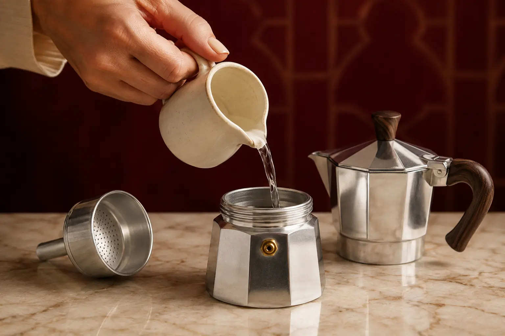
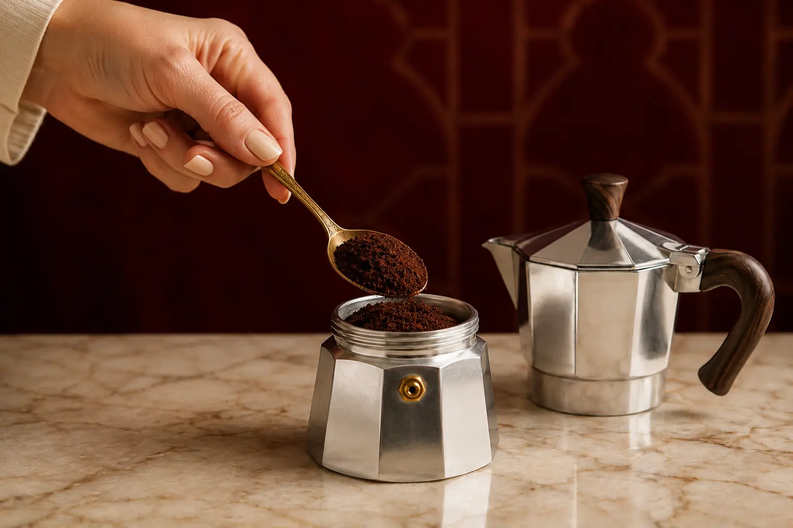
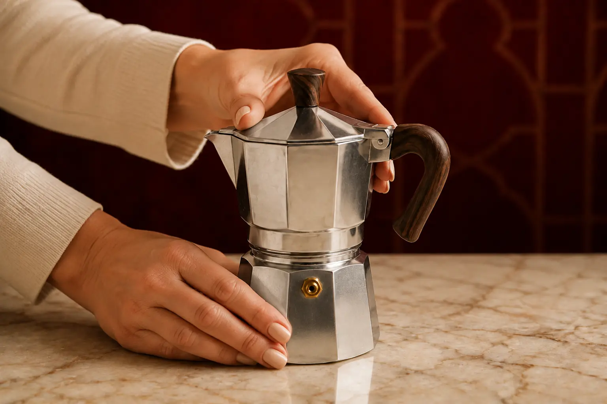
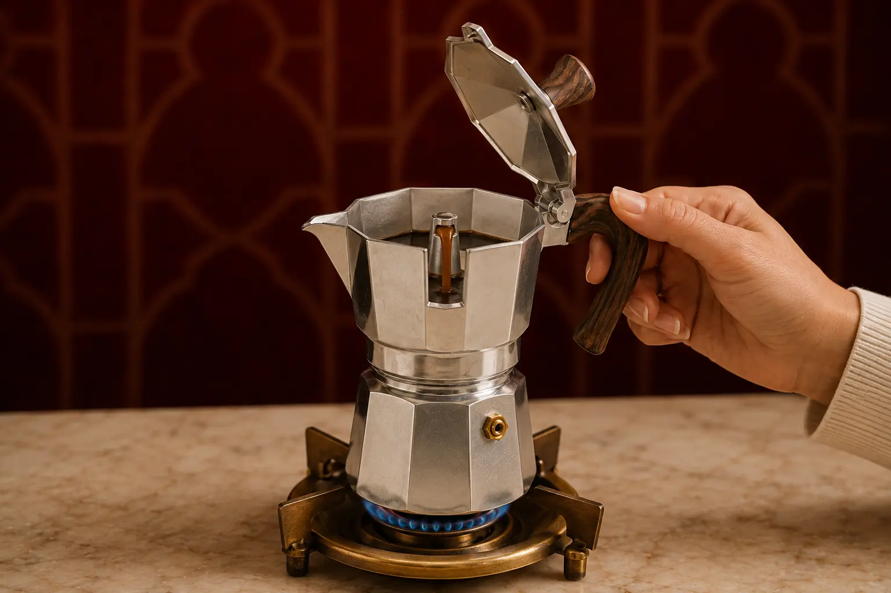
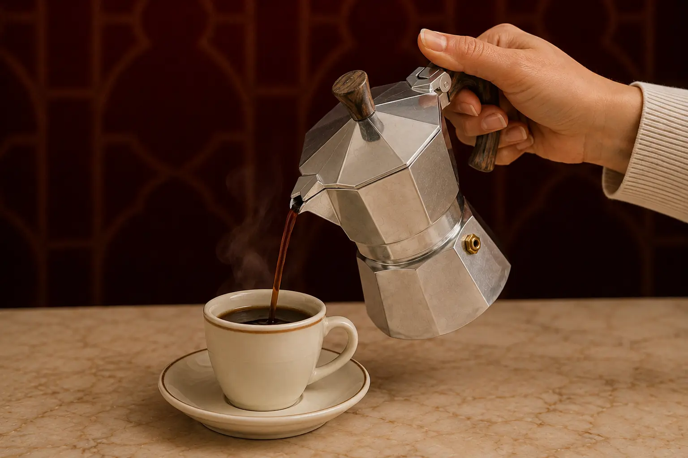

Step 01
Fill the boiler
Add water to the lower chamber, stopping just below the safety valve. Never cover the valve.

Smooth and balanced medium-dark coffee designed for the familiar warmth and intensity of the classic Italian moka pot.
How to brewUse low heat and remove the pot before sputtering for a smooth, balanced cup.

Add water to the lower chamber, stopping just below the safety valve. Never cover the valve.

Add medium-fine coffee until level with the basket rim. Keep it loose and do not tamp or compress it.

Insert the basket and screw the upper and lower chambers together firmly. Tighten using the metal body, not the handle.

Place over low heat. When the coffee begins flowing, watch closely and remove it before vigorous sputtering starts.

Give the brewed coffee a gentle stir inside the upper chamber, then pour and enjoy while hot.
Enjoy as a concentrated cup, or soften it with hot water or warm milk according to your taste.
Explore the collection